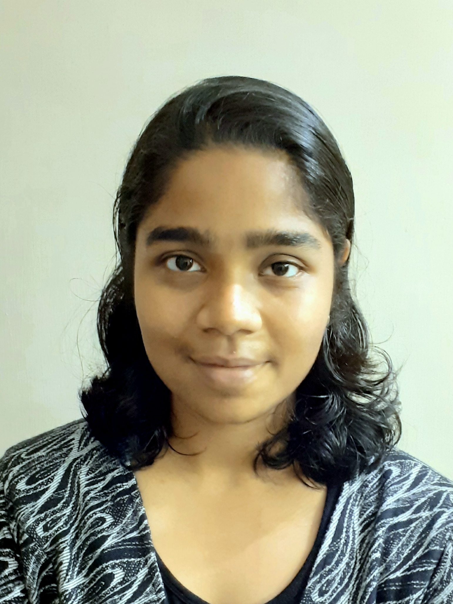

About me:
 I am now a post-doctoral researcher at Institute of Science and Technology Austria (ISTA) in the group headed by Thomas A. Henzinger.
Research Interests
For my PhD thesis, I was working on parity and Rabin games. But my research interests broadly are:- Logic, Automata, Games
- Reactive synthesis, and
- Verification.
Education
I got my B.Sc(Hons.) in Mathematics and Computer Science and M.Sc in Computer Science from Chennai Mathematical Institue (CMI).I was a PhD student at the University of Warwick supervised by Marcin Jurdzinski.
Publications
My DBLP page. My master's thesis can be found here.
Teaching
- I have been a teaching assistant for CS409 - Algorithmic Game Theory, CS259 - Formal Languages and CS260 - Algorithms at Warwick.
- In CMI, I was a part of the teaching team for Games on Graphs, Data Mining and Machine Learning, Advanced Algorithms, Theory of Computation, and Introduction to programming: Haskell.
- I was a teaching assistant for Design and Analysis of Algorithms at NPTEL MOOC.